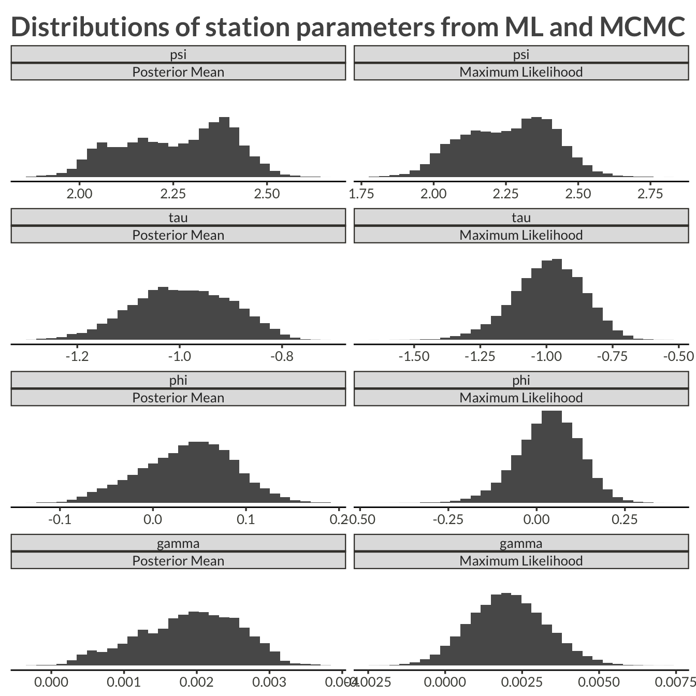
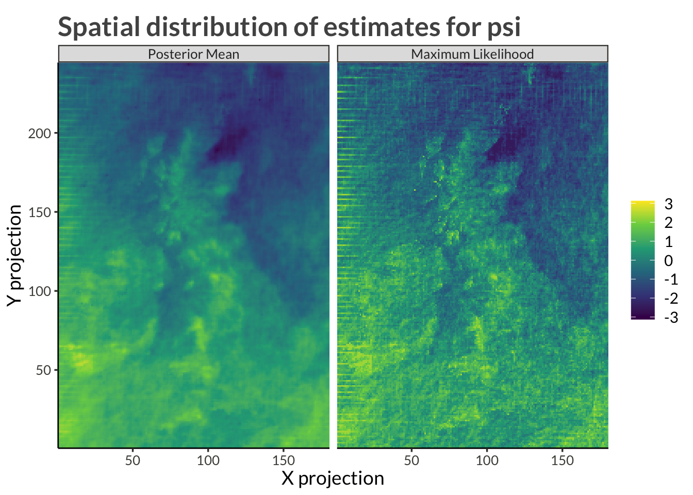
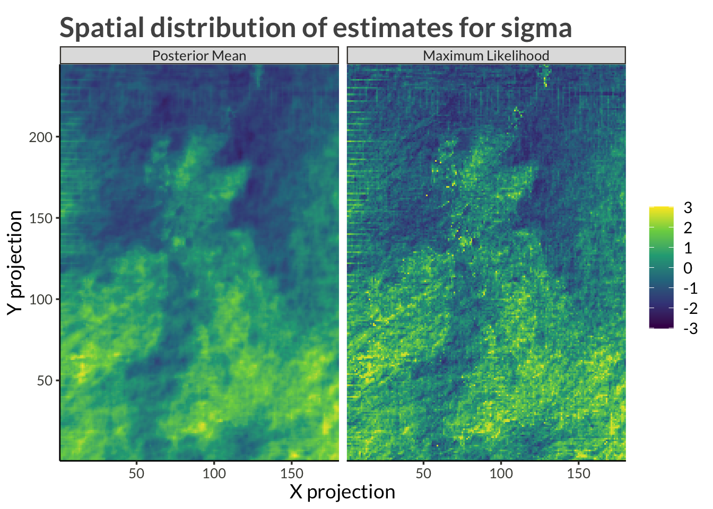

Code
library(bggjphd)
library(tidyverse)
library(bayesplot)
library(GGally)
library(scales)
library(cowplot)
library(kableExtra)
library(arrow)
theme_set(theme_bggj())library(bggjphd)
library(tidyverse)
library(bayesplot)
library(GGally)
library(scales)
library(cowplot)
library(kableExtra)
library(arrow)
theme_set(theme_bggj())The latent parameters, \(\psi\), \(\tau\), \(\phi\), and \(\gamma\), are given intrinsic random walk spatial priors, for example
\[ \begin{aligned} \psi &\sim \mathcal N(\mathbf 0, \tau_\psi \cdot Q_u) \\ \sigma_\psi &= \frac{1}{\sqrt\tau_\psi} \\ \sigma_\psi &\sim \mathrm{Exp}(1) \end{aligned} \]
Here, \(Q_u\) is defined by
\[ Q_u = R \otimes I + I \otimes R, \]
where \(I\) is the identity matrix and
\[ R = \begin{bmatrix} 1 & -1 & & & & & \\ -1 & 2 & -1 & & & & \\ & -1 & 2 & -1 & & & \\ & & \ddots & \ddots & \ddots & & \\ & & &-1 &2 &-1 & \\ & & & & -1 & 1\\ \end{bmatrix}. \]
The results were obtained by running ms_smooth() in parrallel on four cores with four chains each run for 4000 samples. Half of those samples were designated as warm-up and so we have a total of 8000 samples from the posterior.
theta_results <- read_parquet("data/theta_results.parquet") |>
as_draws_df()
station_results <- read_parquet("data/station_results.parquet")
n_iter <- theta_results |>
as_tibble() |>
pull(.iteration) |>
max()theta_results |>
filter(.iteration > 2000) |>
mcmc_trace()
theta_results |>
filter(.iteration > 2000) |>
mcmc_acf_bar()
theta_results |>
subset_draws("theta[1]") |>
as_tibble() |>
rename(value = "theta[1]") |>
group_by(.chain) |>
mutate(accept = 1 * (value != lag(value))) |>
ungroup() |>
ggplot(aes(.iteration, accept, group = .chain)) +
geom_smooth(method = "loess", span = 0.3, se = 0) +
scale_x_continuous(
expand = expansion()
) +
scale_y_continuous(
breaks = pretty_breaks(5),
labels = label_percent(),
expand = expansion()
) +
theme(
plot.margin = margin(t = 5, r = 35, b = 5, l = 5)
) +
coord_cartesian(ylim = c(0, 1)) +
labs(
x = "Iteration",
y = "Acceptance probability",
title = "Acceptance probability for theta[1]"
)
theta_results |>
filter(.iteration > 2000) |>
summarise_draws() |>
kable(digits = 3) |>
kable_styling(bootstrap_options = c("striped", "hover"))| variable | mean | median | sd | mad | q5 | q95 | rhat | ess_bulk | ess_tail |
|---|---|---|---|---|---|---|---|---|---|
| theta[1] | 6.197 | 6.197 | 0.018 | 0.017 | 6.169 | 6.228 | 1.057 | 74.104 | 175.051 |
| theta[2] | 5.227 | 5.228 | 0.021 | 0.022 | 5.192 | 5.261 | 1.025 | 108.293 | 268.148 |
| theta[3] | 3.559 | 3.559 | 0.022 | 0.022 | 3.523 | 3.597 | 1.021 | 145.799 | 225.786 |
| theta[4] | 4.947 | 4.948 | 0.034 | 0.035 | 4.891 | 5.001 | 1.015 | 116.061 | 249.864 |
theta_results |>
filter(.iteration > 2000) |>
mcmc_hist_by_chain(
)
theta_results |>
filter(.iteration > 2000) |>
summarise_draws() |>
kable(digits = 3) |>
kable_styling(bootstrap_options = c("striped", "hover"))| variable | mean | median | sd | mad | q5 | q95 | rhat | ess_bulk | ess_tail |
|---|---|---|---|---|---|---|---|---|---|
| theta[1] | 6.197 | 6.197 | 0.018 | 0.017 | 6.169 | 6.228 | 1.057 | 74.104 | 175.051 |
| theta[2] | 5.227 | 5.228 | 0.021 | 0.022 | 5.192 | 5.261 | 1.025 | 108.293 | 268.148 |
| theta[3] | 3.559 | 3.559 | 0.022 | 0.022 | 3.523 | 3.597 | 1.021 | 145.799 | 225.786 |
| theta[4] | 4.947 | 4.948 | 0.034 | 0.035 | 4.891 | 5.001 | 1.015 | 116.061 | 249.864 |
theta_results |>
filter(.iteration > 2000) |>
mcmc_hist_by_chain(
transformations = function(x) exp(-x/2)
)station_results |>
pivot_longer(c(ml_estimate, mcmc_mean)) |>
mutate(
variable = fct_relevel(
factor(variable),
"psi", "tau", "phi", "gamma"
),
name = fct_recode(
factor(name),
"Maximum Likelihood" = "ml_estimate",
"Posterior Mean" = "mcmc_mean"
)
) |>
ggplot(aes(value)) +
geom_histogram() +
facet_wrap(vars(variable, name), ncol = 2, scales = "free_x") +
theme(
axis.line.y = element_blank(),
axis.text.y = element_blank(),
axis.ticks.y = element_blank()
) +
labs(
x = NULL,
y = NULL,
title = "Distributions of station parameters from ML and MCMC"
)
station_results |>
ggplot(aes(ml_estimate, mcmc_mean)) +
geom_abline(intercept = 0, slope = 1, lty = 2) +
geom_point(alpha = 0.1) +
facet_wrap("variable", scales = "free") +
labs(
x = "ML Estimate (Max step)",
y = "Posterior Mean (Smooth step)",
title = "Comparing estimates from the Max and the Smooth steps"
)proj_plot <- function(data) {
title <- str_c(
"Spatial distribution of estimates for ", unique(data$variable)
)
plot_dat <- data |>
pivot_longer(c(ml_estimate, mcmc_mean)) |>
mutate(
name = fct_recode(
factor(name),
"Maximum Likelihood" = "ml_estimate",
"Posterior Mean" = "mcmc_mean"
)
) |>
group_by(name) |>
mutate(
value = (value - mean(value)) / sd(value)
) |>
ungroup() |>
mutate(
value = case_when(
name == "Posterior Mean" ~ value,
value < quantile(value, 0.0025) ~ quantile(value, 0.0025),
value > quantile(value, 0.9975) ~ quantile(value, 0.9975),
TRUE ~ value
)
)
min_val <- min(plot_dat$value)
max_val <- max(plot_dat$value)
lim_range <- max(abs(min_val), abs(max_val))
limits <- c(-1, 1) * lim_range
plot_dat |>
ggplot(aes(proj_x, proj_y)) +
geom_raster(aes(fill = value)) +
scale_fill_viridis_c(limits = limits) +
facet_wrap("name", nrow = 1) +
coord_cartesian(expand = FALSE) +
labs(
title = title,
fill = NULL,
x = "X projection",
y = "Y projection"
)
}station_results |>
filter(variable == "psi") |>
proj_plot()
station_results |>
filter(variable == "psi") |>
mutate(variable = "mu") |>
mutate_at(vars(ml_estimate, mcmc_mean), exp) |>
proj_plot()
station_results |>
filter(variable == "tau") |>
proj_plot()
station_results |>
filter(variable %in% c("tau", "psi")) |>
pivot_longer(c(ml_estimate, mcmc_mean)) |>
pivot_wider(names_from = variable, values_from = value) |>
mutate(sigma = exp(tau + psi)) |>
select(-psi, -tau) |>
pivot_longer(c(sigma), names_to = "variable", values_to = "value") |>
pivot_wider() |>
proj_plot()station_results |>
filter(variable == "phi") |>
proj_plot()
station_results |>
filter(variable == "phi") |>
mutate(variable = "xi") |>
mutate_at(
vars(ml_estimate, mcmc_mean),
function(x) {
2 * 0.5 * 1 / (1 + exp(-x)) - 0.5
}
) |>
proj_plot()
station_results |>
filter(variable == "gamma") |>
proj_plot()
station_results |>
filter(variable == "gamma") |>
mutate(variable = "delta") |>
mutate_at(
vars(ml_estimate, mcmc_mean),
function(x) {
2 * 0.01 * 1 / (1 + exp(-x)) - 0.01
}
) |>
proj_plot()